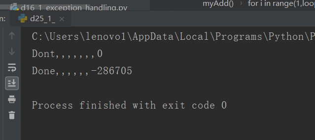
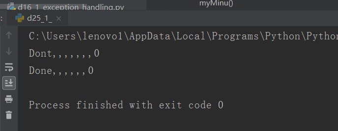

原文出处:本文由博客园博主心悦君兮君不知-睿提供。
原文连接:https://www.cnblogs.com/ruigege0000/p/11421552.html
原文连接:https://www.cnblogs.com/ruigege0000/p/11421552.html
一、共享变量
共享变量：当多个线程访问同一个变量的时候。会产生共享变量的问题。
例子：
import threading
sum = 0
loopSum = 1000000
def myAdd():
global sum, loopSum
for i in range(1,loopSum):
sum += 1
def myMinu():
global sum, loopSum
for i in range(1,loopSum):
sum -= 1
if __name__ == "__main__":
print("Dont,,,,,,,{0}".format(sum))
t1 = threading.Thread(target=myAdd,args=())
t2 = threading.Thread(target=myMinu,args=())
t1.start()
t2.start()
t1.join()
t2.join()
print("Done,,,,,,{0}".format(sum))

正如上面的结果可以看出：并不是我们期望的0，而是-286705，这就是因为我们共享变量了，同时对变量进行了操作，程序并不是原子的。
2.解决方案：使用“锁”，“信号灯”
（1）锁lock：是一个标志，表示一个线程在占用一些资源。
使用方式：先上锁，然后使用共享资源，放心的使用，最后再释放锁，即释放了这个变量。
锁哪个：哪个资源需要共享，那么就锁谁
import threading
sum = 0
loopSum = 1000000
lock = threading.Lock()
#先生成一个锁的实例
def myAdd():
global sum, loopSum
for i in range(1,loopSum):
lock.acquire()#这里申请了一把锁
sum += 1
lock.release()#注意千万不要忘了释放锁
def myMinu():
global sum, loopSum
for i in range(1,loopSum):
lock.acquire()
sum -= 1
lock.release()
if __name__ == "__main__":
print("Done,,,,,,,{0}".format(sum))
t1 = threading.Thread(target=myAdd,args=())
t2 = threading.Thread(target=myMinu,args=())
t1.start()
t2.start()
t1.join()
t2.join()
print("Done,,,,,,{0}".format(sum))
正如我们所预料的加减的顺序无所谓，但最后是零和游戏，但是上面的那个例子，都也是加减顺序无所谓，但是有一点要知道会存在同时对变量的内存使用的情况，这就存在内存被错写的风险，所以最后结果不对，上面的不是零和游戏。
（2）线程的安全问题：
如果一个资源、变量，他对于多线程来讲，不用加锁，也不会引起任何问题，则称为线程安全；线程不安全的变量类型：list\set\dict;线程安全的变量类型：queue
二、源码
d25_1_shared_variable_and_lock.py
https://github.com/ruigege66/Python_learning/blob/master/d25_1_shared_variable_and_lock.py
2.CSDN：https://blog.csdn.net/weixin_44630050（心悦君兮君不知-睿）
3.博客园：https://www.cnblogs.com/ruigege0000/
4.欢迎关注微信公众号：傅里叶变换，后台回复”礼包“，获取大数据学习资料